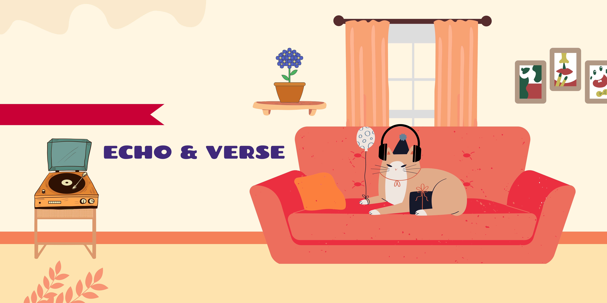
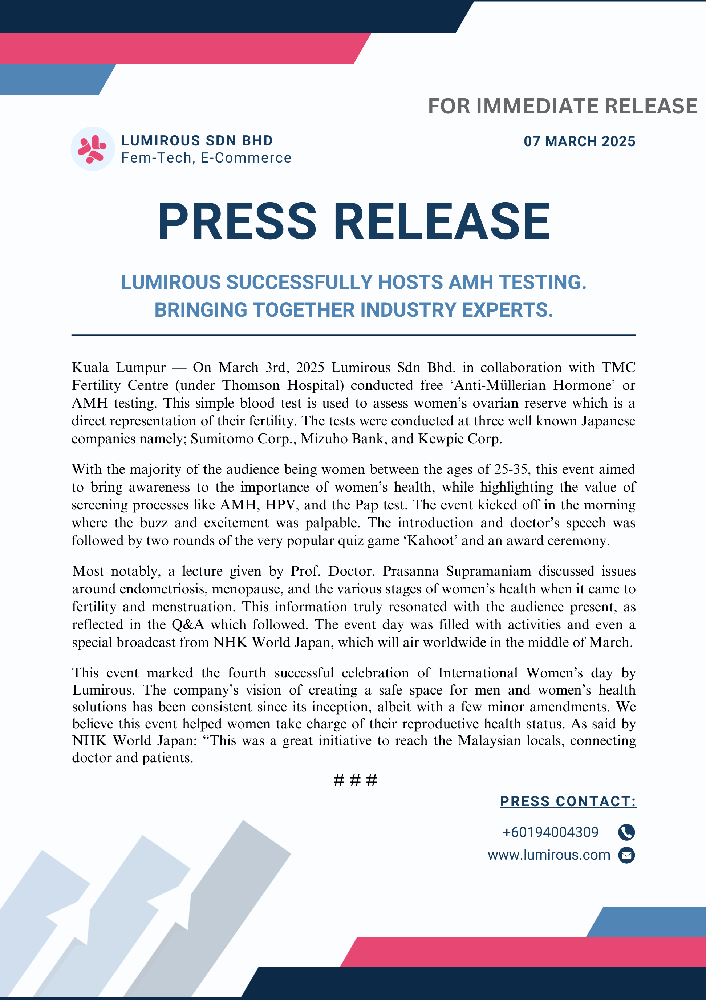

Selected Work
Echo & Verse
A research-led branding project exploring how music lyrics and poetry intersect as cultural texts, supported by audience analysis and visual identity development.

Lumirous — Press Release
Press release developed during a communications internship, focusing on professional tone, structure, and brand-aligned messaging.

Visual Studies & Photography
A curated visual archive examining space, culture, and visual storytelling. All photographs were taken and edited by me.